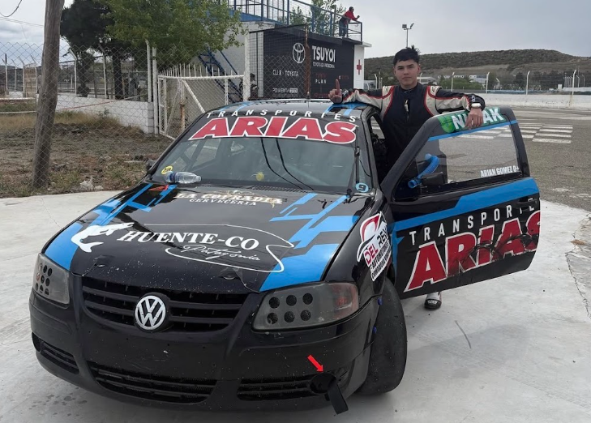

Arian Gómez se perfila como protagonista y apunta a pelear adelante en Comodoro

El automovilismo zonal vuelve a Comodoro Rivadavia y uno de los nombres que aparece como protagonista en el TP Gol 1.6 es el de Arian Gómez, quien llega a la segunda fecha del campeonato con buenas sensaciones y el objetivo claro de pelear en los puestos de adelante.
En la previa, el piloto destacó el trabajo que vienen realizando junto a su equipo, ultimando detalles en el auto para llegar de la mejor manera al fin de semana. “Estamos alistando todo junto a mi viejo, que está a cargo del auto, y el ‘Huevo’ en la parte de motores. Ya con los últimos detalles como para poder estar presentes en esta fecha”, contó.
Gómez viene de un gran 2025, donde finalizó en el tercer lugar del campeonato, consolidándose como uno de los pilotos más competitivos de la categoría. Ese rendimiento se mantiene en este inicio de temporada, donde el objetivo sigue siendo claro: mantenerse en la pelea. “Venimos teniendo muy buenos resultados. La segunda mitad del campeonato pasado fue muy buena y eso nos motiva a seguir por este camino”, explicó.
La primera fecha en Trelew dejó señales positivas, más allá de los inconvenientes que aparecieron durante el fin de semana. Un problema en la clasificación obligó a cambiar el motor y condicionó el desarrollo de la fecha, pero el potencial del auto quedó en evidencia. “Lo importante es que sabemos que el auto está y que el equipo está firme. Eso es lo principal”, remarcó.
Además, el inicio del campeonato presentó un desafío técnico importante, con cambios en el comportamiento del auto tras correr anteriormente con el máximo de lastre. “Nos sorprendió bastante cómo cambió el auto al sacarle el lastre. Tuvimos que trabajar mucho para adaptarnos, pero son cosas que sirven para seguir aprendiendo”, señaló.
De cara a esta segunda fecha en Comodoro, el equipo llega con confianza y con el objetivo de seguir creciendo. “Llegamos bien, por suerte el auto no terminó muy dañado y pudimos hacer un repaso general. La idea siempre es ir a ganar, pero también es importante aprender y dejar todo en pista”, expresó.
Detrás de este presente hay un trabajo constante y un grupo que acompaña en cada paso. “El agradecimiento siempre es para mi viejo, que está al frente de todo, para el ‘Huevo’ en los motores y para toda la gente amiga y la familia que siempre está apoyando”, destacó.
Con un auto competitivo, un equipo firme y la motivación intacta, Ariel Gómez se posiciona como uno de los pilotos a seguir en este fin de semana, en una categoría que promete nuevamente grandes carreras.
Escuchá la entrevista completa
🎧 La charla completa con Arian Gómez en la previa de la segunda fecha del TP Gol 1.6 en Comodoro.
Dale play y escuchá la entrevista completa.